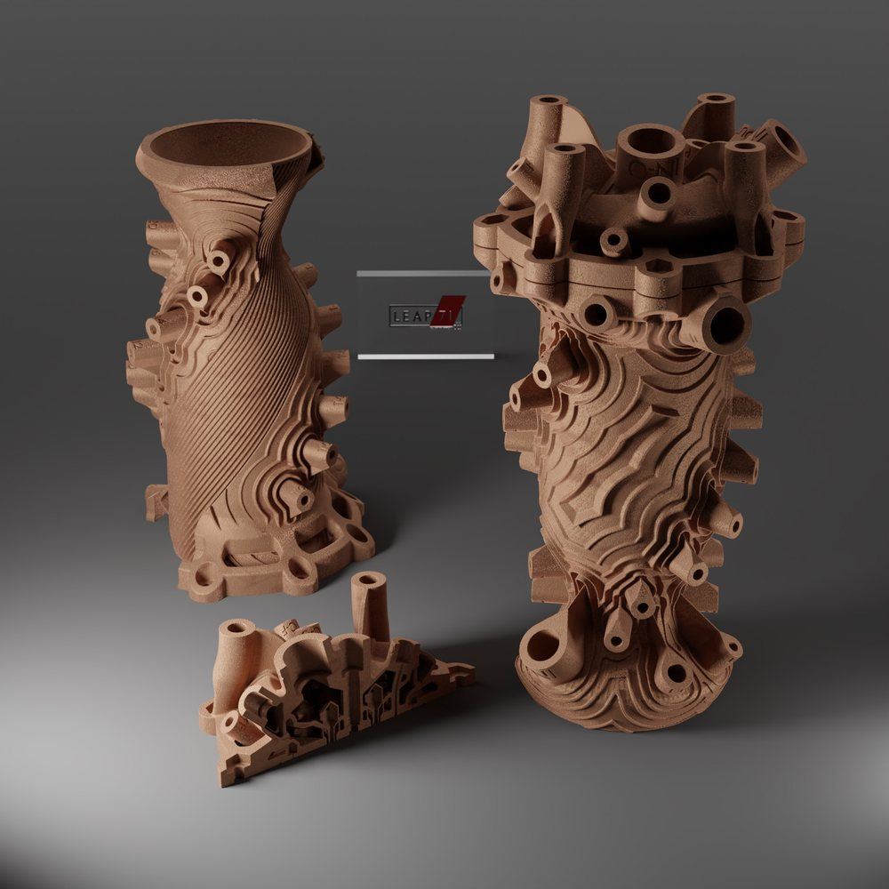
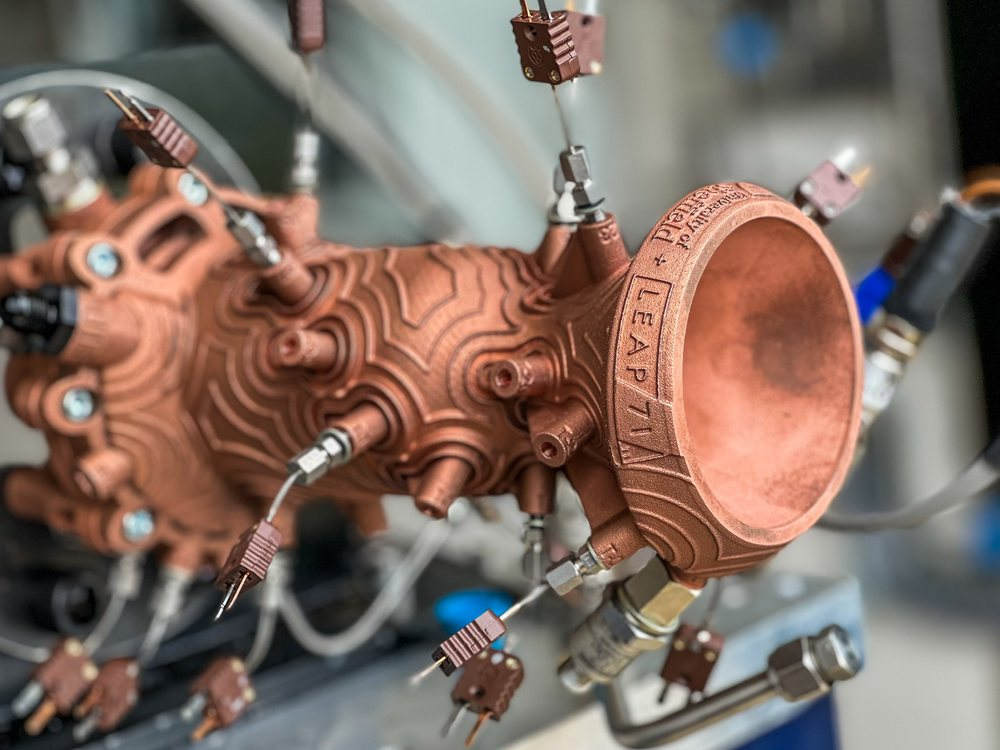
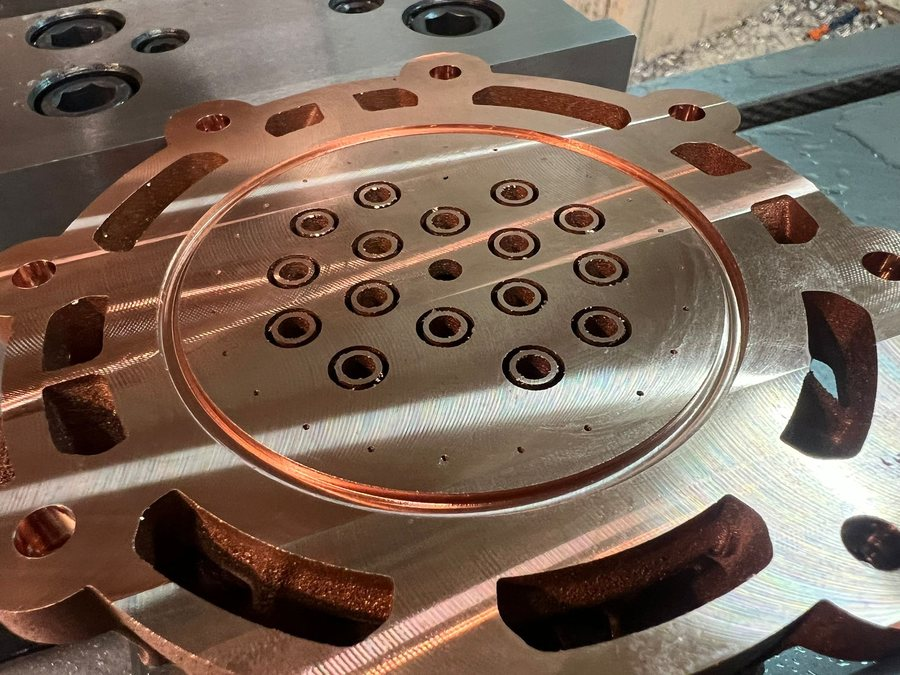
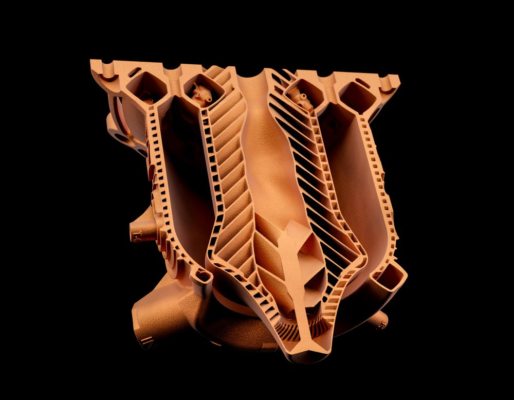
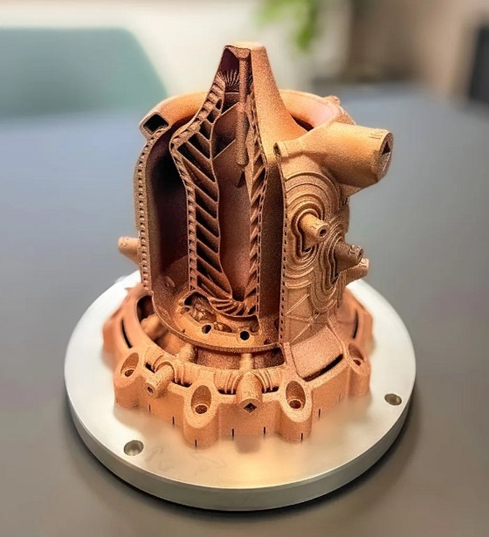
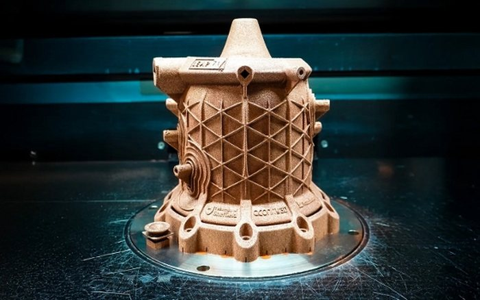

元宝回答全记录 · ① / ② ｜ 来源分享页 Fg0WWvF57zqW（分享于 2026-11-08）
把发动机翻译成一道带物理约束的优化题：不画形状，只给守恒律与边界。③ 已按 LEAP 71 / Noyron 官方图重建为铜色一体件 + 壁内螺旋流线族，分叉树构型保留为对照。
0.84R~1.00R 的壁厚内部（中心 0.92R），不是贴在内衬外表面的一层树；③ 流线遇到机身接口会自动绕开成同心涡（可关掉对照），喉部热流最大处通道收细到 0.8 mm、两端放宽到 1.2 mm。xy 面（法向 z）／yz 面（法向 x）／xz 面（法向 y）
三个基准面，滑条 −100…+100% 逐帧只改裁剪平面的 normal / constant（不重建几何，所以跟手），
可切「保留哪一侧」、可加半透膜。膜按 radiusAt(t) 真算壁厚截面
（横剖＝两条 0.84R~1.00R 的带，平切＝一个环带），不是拿个圆去冒充；
法兰／凸台／探针这些壁外零件不进膜，因为那能编的只有假的。
切是 GPU 材质级裁剪：通道被切断后是空管口，不是「少画几根」。
视角键：等轴 xyz／正视 xy／俯视 xz／仰视 −y 是透视
（仰视是这轮补的：原来仰角被钳在 93°，永远转不到模型下方，所以底视图一直看不到；
现在一路能转到底，转下去时地面网格会自动收起，免得整片挡在镜头前），
正视投影 2D／俯视投影 2D 换成正交相机（无近大远小，屏上可直接量比例），
且 2D 档会自动停自转 —— 正投影还在转就量不到东西。剖面与「楔形剖切」二选一、不叠用。
fig_leap71_aerospike_mesh.jpg（整机照）＋
fig_leap71_aerospike_section.jpg（半剖照）。结构从下往上是：
外撇的锯齿底裙（14 片弧形柱块叶瓣＋长圆孔，机加出来的承力／对接面）→
筒身三明治厚壁（壁厚 0.197 ＝ 外径 11.4%，拆成内皮 0.055 ＋ 通道带 ＋ 外皮 0.072；
通道带被 0.022 的环肋按 0.072 节距隔成 15 格方孔 —— 剖开就是一排密排方孔，
这是原版剖面最强的签名）→ 外蒙皮交叉菱形点阵（两族反向斜螺旋筋）→
略微外伸的厚台肩（一圈下垂支耳＋盘面 8 组成对的矩形开口／凸台，机加集液口
就是这个样子）→ 台肩正中那圈环形喉缝 →
短而钝的中心塞锥（高度只占整机约 1/3、根部半径约筒身的 0.4，不是一根细长针；
真机就是这么短粗，塞锥太长会让"外壁由大气充当"这件事读不出来）。
内腔里有 44 片从内壁伸入的短肋、燃烧室内壁 32 条竖向冷却槽；
塞锥表面是 两族反向斜槽交成的鱼骨纹（不是一竖到底的直槽）——
这些全都是剖开才看得见的东西。
为什么值得单独做一个方案：钟形喷管只在设计高度上最合适，压力一偏就过膨胀／欠膨胀；
气动塞把外壁换成外界大气本身，燃气贴着锥面膨胀，外压多少气柱就自己"长"到哪儿 ——
一台塞式机从海平面到真空不用换喷管。代价是整根锥面都泡在燃气里，冷却比钟形更狠。传统 CAD 是人画草图、再仿真验证；这里反过来——把整块可用体积切成体素／隐式场，每格只有「固体 or 流体」两种身份。人只给推力、室压、推进剂、燃气温度、材料、3D 打印工艺限制（正是视频说的压力／温度／燃料／推力／制造约束），目标函数写成：
没有「发动机该长什么样」这个初始条件，几何才可能长成任意分叉、0.8 mm 的细通道。
每轮跑共轭传热 CFD + 结构场，得到温度场、压力场；再用伴随法做灵敏度分析，算「这一格改成流道，目标会变好多少」，然后更新材料分布、反复收敛——这就是拓扑优化／创成式设计的标准循环。
画面里的 LEAP 标识对应迪拜 LEAP 71 的 Noyron：它把热力学、流体、制造规则写成「计算工程模型」，生成时就大致正确，再用点火试车的实测温度／压力曲线回灌校正。所以不是一次成神，是设计 → 打印 → 试车 → 回灌的闭环。
3000 °C 级燃气下，低温推进剂要先绕壁吸热再进燃烧室（再生冷却），一路得同时满足三件互相打架的事：换热面积够大、流动阻力够小、金属壁厚够承压。
而「在有限空间里用最小阻力把流体送到每一个点」这个变分问题，最优解就是层级分叉、逐级变细的树状网络：
分叉角与长度比也有最优值（对话取约 75° 夹角定径）。构形定律说得更直白：凡有「流动 + 空间填充」的系统都会朝阻力更小的方向演化，于是心血管、叶脉、河流、肺，和这台发动机的冷却通道，撞进同一族几何。
随形内流道、螺旋／分叉通道、铜合金一体成型，铣削加焊接根本做不出来；激光粉末床熔融（LPBF）把「任意拓扑」直接变成实物，还顺手消掉焊缝和泄漏点。没有增材制造，这套几何只能停在硬盘里。
机器越来越不像机器，是因为我们终于没把「机器该长什么样」写进初始条件里。
能，但要分两层说：three.js 只负责「画」，它自己不会涌现结构。真正让形状长出来的是旁边那套「物理场 → 过热信号 → 分叉决策 → 回算温度」的循环。浏览器里能跑它的降阶版，观感和原理跟视频一致；换成能点火、能打印的工程件，就得换整套栈。
对话中给出的第一版单文件演示：只给边界条件，不画任何一根流道，结构自己长出来；可拖 5 个滑块（燃气峰值、材料耐温、压降惩罚、最小可打印流道、冷却剂入口温度），旋转缩放看圆筒壁上的流道。
d³=Σd³、约 75° 夹角定径；细管沿程吸热升温，冷却能力自然衰减，逼出更多分叉| 改动 | 结果 | 说明 |
|---|---|---|
| 压降惩罚 → 0 | 分叉失控，远端覆盖反而不足 | 预算放宽让近端支路疯长，段数／泵功被吃掉，走不到远端 |
| 最小流道 → 1.8 mm | 分叉深度 5 级 → 4 级 | 可打印下限抬一级，最细分叉直接不合法 |
约束怎么给，形状就怎么长——这才是视频里最值得看的部分。
两个值得试的：拖「剖切比例」到 40% 看壁厚里的通道断面；把「压降惩罚」拉到 0——预算放宽反而让支路疯长、远端缺冷，比默认更差，这是真实优化里很典型的陷阱。旧版 emergent_engine.html 留作对照。
| 层面 | 真实工程栈 | 浏览器 demo |
|---|---|---|
| 几何内核 | 体素／隐式场（PicoGK + OpenVDB），直接出可制造文件 | 72×40 → 64×36 降阶网格，参数曲线 |
| 物理场 | 共轭传热 CFD + 结构应力场 | 简化导热平滑 + 给定热流分布 |
| 灵敏度 | 伴随法 ∂J/∂ρ | 启发式「过热即信号」 |
| 闭环 | 点火试车实测温度／压力回灌校正 | 无试车回灌 |
| 制造 | 金属 3D 打印，任意拓扑一体成型 | 无 |
换句话说，把简化场换成真 CFD 和体素内核，算法逻辑不用改，但那就不是浏览器 demo 了。对话亦注明：沙盒 WebGL 被禁用，只验证了几何与交互逻辑，本页已把 three.js 落到同目录 vendor/three.min.js，可完全离线打开。要继续往真 CFD 方向走，下一步该换的是几何内核；渲染细节补得再像，也换不来讲得准的物理——③ 那台按官方图重建的铜色发动机就只是「形似」，见 §10。
| 本页：火箭冷却通道 | 下一篇：开尔文水环 | |
|---|---|---|
| 类型 | 变分型 | 失稳型 |
| 机制 | 给定边界，求「换热最大 + 泵功最小 + 不烧穿」的稳态最优几何 | 没有目标函数，正反馈把微涨落放大、破缺对称 |
| 结果 | 收敛到 Murray 分叉树，是个不动点 | 靠放电／漏电／阻尼稳住，是耗散结构 |
| 饱和机制 | 耐温上限 + 压降预算 | 击穿电压 + 瑞利极限 |
| 停机后 | 结构还在 | 停水，电压和环一起衰减 |
共通的是：都不把形状写进初始条件，只给守恒律和边界。差别是，一个选出最省的解，一个选出最先失稳的模。
→ 去看双桥开尔文水滴（含双柱远距分离修正）| 部位 | 官方图里实际长什么样（我逐张看过） | 上一版 / 这一版 |
|---|---|---|
| 整机 | 铜色单体件：顶部一堆圆柱接口＋法兰，中间圆柱燃烧室，下面收敛到喉部再张开成钟形喷管，底部一圈花瓣凸台法兰 | 上一版＝浅蓝半透玻璃罩；这一版＝不透明铜壳 + 喷注器面 + 接口 + 探针 + 上下法兰 |
| 冷却通道 | 密集、等距、单向斜螺旋细纹；L71_04 左半与 L71_03 机身上看得最清楚 | 上一版＝血管状分叉树；这一版＝96 条（可调）连续螺旋流线 |
| 通道位置 | 嵌在壁厚内部；DF_03 / SP_01 / DF_05 剖面里是沿母线一排排小方孔（横截面） | 上一版＝贴在内衬外表面；这一版＝0.84R~1.00R 壁内，中心 0.92R，剖口补小方孔列 |
| 遇接口 | 纹路绕开圆形凸台，形成同心涡／等高线状绕流（L71_04、L71_03、DF_05 都看得到） | 这一版给 8 个接口加了避障偏转，可用「接口绕流」开关对照 |
| 喷注器面 | 同轴涡流喷注头：中心元 + 同心环阵列，密封大圆环 | 中心 1 ＋ 内环 6 ＋ 外环 12（错半格 15°）＝ 19 个单元；上一版 1/6/6/5 再叠 0.37 rad 错相，才是「零散不对称」的病根 |
| 测量端口 | 官方件外壁插满测点，集中在筒身与喉部附近，同层周向等分 | 三层：筒身 4 点（90°）＋筒身下 2 点（180°）＋喉部上游 2 点（180°），层间错 45°；扩张段只留 1 个。上一版沿母线随手撒 8 个，转过去就是「悬在轮廓外的几根棍」 |
| 截面 | 公开原文：variable cross sections as thin as 0.8mm（0.8–1.2 mm） | 这一版喉部最热处收到 0.8 mm、两端放到 1.2 mm；只是标度示意，斜率是凑的，不是传热解 |
| 喷注器 | 同轴涡流喷注头；L71_05 特写是密封大圆环里约 18 个喷注单元，环外花瓣凸台与大法兰孔 | 这一版补了喷注器面、密封环、18 个同轴单元、3 根推进剂入口管 |
| 薄膜冷却 | 公开原文：tiny holes near the wall of the combustion chamber | 这一版内壁近喷注器加一圈 48 个小孔 |
| 测量端口 | 公开原文：multitude of measurement ports for temperature and pressure；L71_03 实拍插满热电偶探针 | 这一版加了径向凸台、中心孔与探针小方块 |






thin cooling channels that swirl around the chamber jacket, with variable cross sections as thin as 0.8mm；燃温约 3000 ℃、外壁 <250 ℃；同轴涡流喷注头；壁面小孔薄膜冷却；大量温度/压力测量端口把数据回灌 Noyron。2024-06-14 英国 Westcott 试车，3.5 s 短试 + 12 s 稳态长试，O/F 1.8→2.3；试后拆解完好；通道压降高于模型预测，归因于 3D 打印表面粗糙度，于是后处理抛光并修改了 Noyron 的通道几何逻辑。